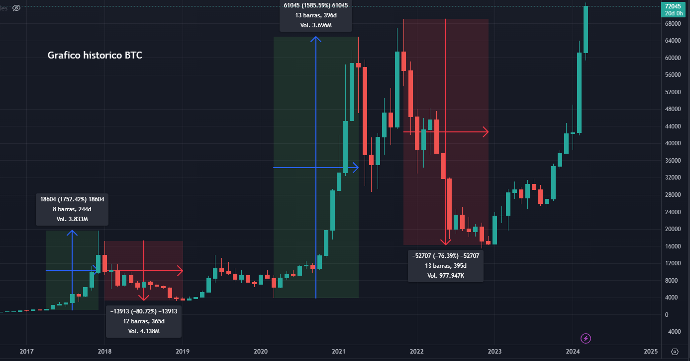

Bitcoin, la primera y más conocida criptomoneda, nació en 2009 como un proyecto radical que desafió el status quo financiero. Su creador, Satoshi Nakamoto, introdujo un sistema descentralizado y transparente que permite transacciones peer-to-peer sin la necesidad de intermediarios. La historia de Bitcoin está marcada por su increíble ascenso de un activo virtual sin valor a un fenómeno global que ha capturado la atención de inversores, gobiernos y medios de comunicación. Su naturaleza finita, con un suministro limitado a 21 millones de monedas, ha generado un interés sin precedentes como reserva de valor y cobertura contra la inflación. Hoy, Bitcoin continúa siendo el estándar de oro en el mundo de las criptomonedas, con una comunidad apasionada y un potencial transformador que sigue evolucionando.
